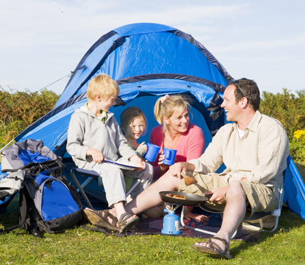
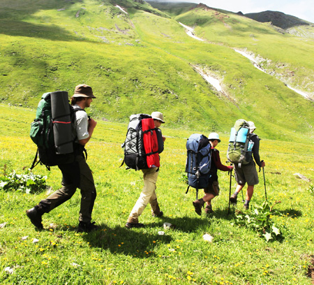

7 Easy Steps to Great Weekend Camping
In This Article: What You Need
Family camping can be done simply and spontaneously during any period of summer. Is there a free weekend ahead? You can camp with confidence once you realize how easy it is to plan your trip.
What You Need
1. Begin in the Backyard (one night)
Backyards are great for beginner camping, to acclimate your children to all the elements of a real campground. Stage your tents, sleeping bags, cooking utensils and bug spray on the patio and away you go. Make your backyard experience as close to a regular campground as possible. No extension cords leading back into the house!
2. Campground Casual (two nights)
You don’t need to start with an elaborate stay in a national park, unless one is nearby. Pick a campground, public or private, within a two-hour drive of your home. Leave Friday afternoon if you can. Give yourself some peace of mind and look for campgrounds that take reservations so you are sure to have a spot, and don’t end up driving around looking for alternatives sites.
Have a plan “B” in case you run into severe weather or the kids are just not ready for a full two nights and two days away from the homestead. It’s perfectly okay to slip out that second night for hamburgers or ice cream, or to pack in a first night’s dinner that’s already prepared. Just make sure you get a fire going and have s’mores ready before bedtime.
3. Planning is Part of the Adventure
Involve everyone in the trip planning. Spread out maps to highlight both the road trip and the campground you’ve selected. Hold a special “camp dinner night” at home once a week and try out different rustic recipes, including assigning the cooking and clean-up duties.
Prepare for every kind of weather. Many camping areas are at higher elevations that can get cold quickly at night, even in the summer. Rain gear and extra blankets are always welcome should you stand a chance of getting soaked. Even if the weather forecast calls for pleasant climate, be prepared for cold, buggy nights. Bring jeans or other long pants, a long-sleeved shirt, a sweatshirt, socks, and close-toed shoes to help keep your family warm and protected against bugs. Pack older clothes that you don't care about getting dirty or ripped.
Pack that first-aid kit and make sure you have extra ways to keep your smart phone charged in case you need it in an emergency. Always let family members know where you are, including a website or phone number for your campground.
4. Plan for Physical Activity
Being outside in campground and state park terrain creates many opportunities to be active. Be careful not to bring too many comforts of home, including items that might keep you less active. With children, remember that everything for them will need to be based on short attention spans. A 45-minute hike will be just fine. Start with shorter, easier trails and build up to the major mountain-top ascent on the second day, or on the next camping trip.
5. Tent Talk
If you haven't camped since last year or are borrowing a tent, open your tent up before you go to air it out, make sure it's not musty or moldy. Check that you have all the poles, stakes, and the fly (the tarp that goes over the top to help keep rain out).
You may be ready for a new tent. You will find a good variety of inexpensive tents that are primarily designed for summer use when the weather is more predictable. The summer tents feature plenty of mesh which gives good ventilation in hot weather. You also want the tent to be waterproofed which should keep you and your gear dry in light summer showers. However, the tent walls can become damp, so it’s advisable not to allow your gear to touch them.
When considering tent size for backyard and family campgrounds, think comfort. Give yourself the extra room, which you will sure appreciate when everyone is inside for the night, or during a brief afternoon shower. As a rule, select a tent at least one berth larger than manufacturers recommendations.
You may want to consider a tent that features a separate sleeping area, which gives you a bit more privacy and also gives the kids their own space. Is the tent you’re considering big enough to sit around in and play games? Does it have enough ceiling height that allows you stand up and move around comfortably? Where will you store your extra gear that you bring along? Extra rooms or space in your tent can be very useful for keeping things stored out of the way.
6. Don’t Shortcut Comfort
Even if you're a tough, experienced camper who opts not to have the comfort of an air mattress, cot, or sleeping mat, bring something comfortable for your children to sleep on. It may save you from having to return home early with kids who aren't fans of roughing it on the ground.
Do your family a favor and test your air mattresses and blow-up sleeping mats for holes and leaks before your trip. Remember to bring a battery-operated air pump for your mattresses unless there's one built in. Avoid setting up camp on rocky areas that could puncture your mattress.
Without a pillow, you could be facing a rocky night's sleep. Kids also like having a pillow for the long car ride and as a little piece of home to sleep with if camping is a new experience. Your pillows may smell like a campfire for a few days after your trip, so consider getting a different set of pillows for camping.
7. Camping Opens a Big World
Camping is immensely educational. Look at all the subjects you naturally cover when camping! You can teach your kids about geography, history, geology, zoology, climatology, physics, astronomy and math, and there may be more that you discover if you are creative about your approach.
Find a historic site on the way to or from your camping weekend. Look for short side trips where there are historical re-enactments or demonstrations of frontier skills such as woodworking, pottery, animal husbandry. The local chamber of commerce or visitor bureau for the county should have plenty of ideas you can use.
Related Articles
Resources
Other Articles
Related Categories